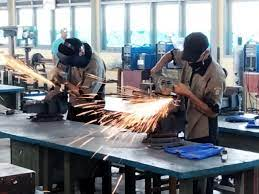
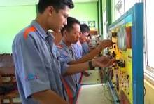

TKJ Adalah singkatan dari Teknik Komputer Jaringan. TKJ merupakan sebuah kejuruan yang mempelajari tentang cara merakit komputer, mengenal dan mempelajari komponen hardware apa saja yang ada di dalam komputer, merakit komputer serta fokus mempelajari jaringan dasar.
Teknik Sepeda Motor (TSM) adalah kompetensi keahlian pada Bidang Studi Keahlian Teknologi dan Rekayasa Program Studi Keahlian Teknik Otomotif yang menekankan pada keterampilan pelayanan jasa mekanik kendaraan sepeda motor roda dua.
engelasan (welding) adalah salah satu teknik penyambungan logam dengan cara mencairkan sebagian logam induk dan logam pengisi dengan atau tanpa tekanan dan dengan atau tanpa logam penambah dan menghasilkan sambungan yang kontinu.
Teknik Kendaraan Ringan merupakan kompetensi keahlian dibidang Teknik Otomotif yang menekankan keahlian pada bidang penguasaan jasa perbaikan kendaraan ringan. Kompetensi keahlian teknik kendaraan ringan menyiapkan peserta didik untuk bekerja pada pekerjaan jasa perawatan dan perbaikan didunia usaha / industri.